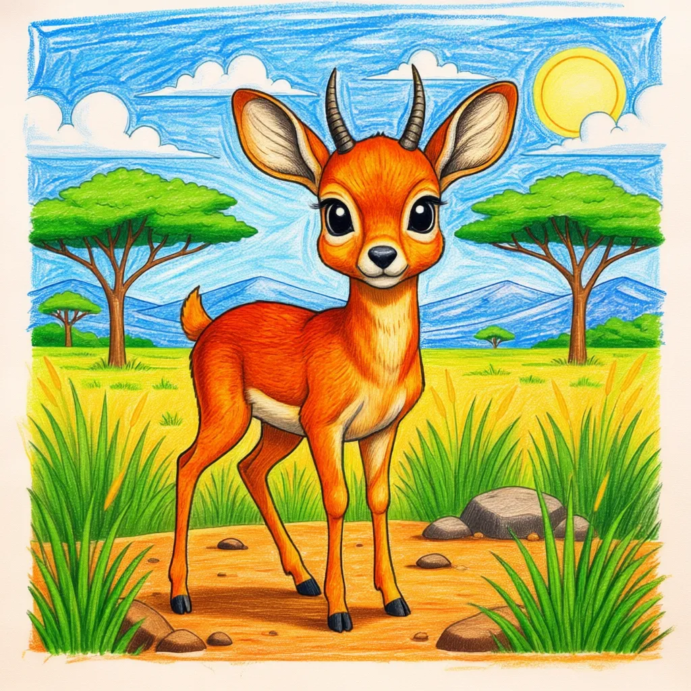

Dikdik
Madoqua spp

Wichtige Merkmale
- Das Dikdik ist eine der kleinsten Antilopen Afrikas und nur etwa 30–40 cm groß – ungefähr so groß wie ein Kaninchen!
- Sie sind nach dem charakteristischen „Zik-Zik“- oder „Dik-Dik“-Alarmruf benannt, den sie bei Gefahr machen.
- Dikdiks sind monogam, das heißt, sie bleiben ein Leben lang mit einem Partner zusammen und leben in kleinen Paaren.
Besondere Fakten (Spaßige Fakten!)
- Sie benutzen Tränendrüsen nahe ihren Augen, um ihr Revier mit einem Duft zu markieren.
- Sie sind so klein, dass man sie manchmal für Jungtiere hält, aber sie sind ausgewachsen!
- Dikdiks trinken selten Wasser, da sie die meiste Flüssigkeit aus den Blättern und Beeren bekommen, die sie fressen.